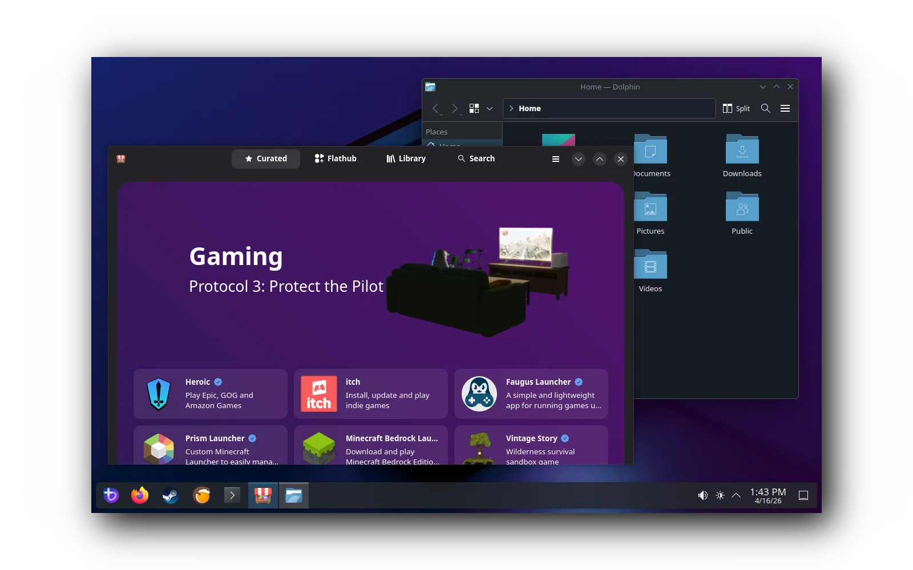
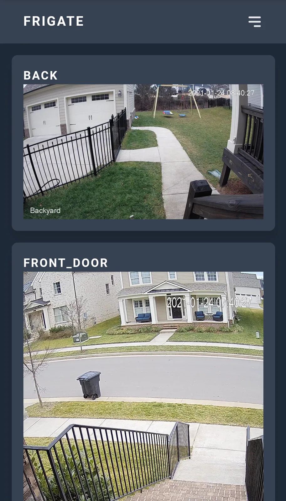
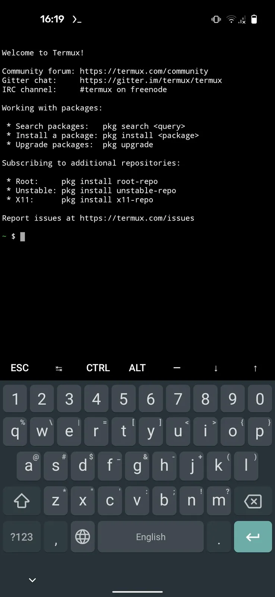

Image pending review
scrcpy
Keep an older Android device usable through computer-based display and control.
Showing records 1–60; filtering loads all directory pages.
Keep an older Android device usable through computer-based display and control.
Investigate a path for installing and distributing third-party apps on an existing Kobo.
Manage a repurposed Linux server through a browser.
Turn an old tablet into an auxiliary display endpoint receiving desktop sharing in a browser.
Use an alternative document reader on a Kobo that meets upstream conditions.
Investigate an alternative software experience for an older Kindle.
Use a low-power older device as a home-network DNS filtering node.
Evaluate alternative firmware for an Asus router still in service.
Evaluate an older Android tablet as a voice-enabled home-control panel.
Turn old computers or supported devices into dedicated retro-gaming systems.

Provide a maintainable gaming OS for PCs and handhelds with sufficient remaining performance.
Use a spare host as a personal cloud and self-hosted app entry point.
Host applications and manage access on a home server.
Reduce the work of deploying services on old single-board computers with a lightweight OS and software management.
Use an idle phone as a computer video input.
Turn spare hardware into web-managed network storage.
Reconfigure programmable old sensors, plugs and DIY boards for local uses.
Lock an idle Android device into a single-purpose display or interaction terminal.
Investigate a path to third-party software access on a supported reMarkable.

Connect existing cameras to local object detection and recording.

Render Home Assistant pages on a server and use an old Kindle only for display.

Turn an old mini PC or thin client into a home automation server.

Restore use of selected HP Laser printers without official macOS drivers through the native macOS print path.
Evaluate launching third-party programs through file events on an older Kobo.
Turn an old Kindle into an information display with switchable content.

Use an old Paperwhite as a desktop information screen displaying AI tool usage.

Extend multiformat reading, typography and synchronization on old e-readers.
Reuse old PCs and supported single-board computers with a lightweight RetroArch system.
Turn an old mini PC or supported device into a dedicated Kodi player.
Continue using Squeezebox devices and compatible players with a local music server.
Bring multiple older servers into one application platform.
Add an accessible entry point for scripts and custom actions on an older Kobo.

Turn an old PC and storage hardware into a LAN NAS.
Repurpose a multi-NIC older computer as a network-edge appliance.
Use an older multi-NIC host as a router and firewall.
Use an older host for encrypted backup jobs.
Investigate infrastructure for developing or running third-party apps on an existing reMarkable.
Combine an older host and drives into network storage.
Turn an old host into a lightweight network audio player for Squeezebox-compatible servers.

Run command-line tools and lightweight services on idle Android hardware without replacing the OS.
Evaluate using an older Kobo for online manga reading.
Use an idle phone or tablet as a fixed web-panel display.

Connect an existing XiaoAI speaker to a language model while retaining its voice input.
The goal is to turn Xiaomi AX3600 into a maintainable OpenWrt router for routing, access-point or basic network-service duties.
The goal is to turn Xiaomi AX9000 into a maintainable OpenWrt router for routing, access-point or basic network-service duties.
The goal is to turn Xiaomi Mi Router 3 Pro into a maintainable OpenWrt router for routing, access-point or basic network-service duties.
The goal is to turn Xiaomi Mi Router 3G v2 into a maintainable OpenWrt router for routing, access-point or basic network-service duties.
The goal is to turn Xiaomi Mi Router 3G into a maintainable OpenWrt router for routing, access-point or basic network-service duties.
The goal is to turn Xiaomi Mi Router 4 into a maintainable OpenWrt router for routing, access-point or basic network-service duties.
The goal is to turn Xiaomi Mi Router 4A 100M Edition into a maintainable OpenWrt router for routing, access-point or basic network-service duties.
The goal is to turn Xiaomi Mi Router 4A 100M International Edition V2 into a maintainable OpenWrt router for routing, access-point or basic network-service duties.
The goal is to turn Xiaomi Mi Router 4A 100M International Edition into a maintainable OpenWrt router for routing, access-point or basic network-service duties.
The goal is to turn Xiaomi Mi Router 4A Gigabit Edition v2 into a maintainable OpenWrt router for routing, access-point or basic network-service duties.
The goal is to turn Xiaomi Mi Router 4C into a maintainable OpenWrt router for routing, access-point or basic network-service duties.
The goal is to turn Xiaomi Mi Router AC2100 into a maintainable OpenWrt router for routing, access-point or basic network-service duties.
The goal is to turn Xiaomi Mi Router WR30U into a maintainable OpenWrt router for routing, access-point or basic network-service duties.
The goal is to turn Xiaomi MiWiFi 3A into a maintainable OpenWrt router for routing, access-point or basic network-service duties.
The goal is to turn Xiaomi MiWiFi 3C into a maintainable OpenWrt router for routing, access-point or basic network-service duties.
The goal is to turn Xiaomi MiWiFi Mini into a maintainable OpenWrt router for routing, access-point or basic network-service duties.
The goal is to turn Xiaomi MiWiFi Range Extender AC1200 RA75 into a maintainable OpenWrt router for routing, access-point or basic network-service duties.
Remove a filter or try another device/model term.